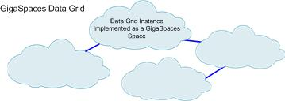

This section describes the In-Memory Data Grid (IMDG) architecture, to provide a comprehensive understanding of its functionality, behavior, and accessibility.
Runtime Perspective - explains how the GigaSpaces components execute and interact in runtime on multiple physical machines.
SOA/EDA Perspective - explains how the data grid and the Space-Based Architecture are actually a special case of SOA/EDA, and can be used to implement a Service Oriented Architecture that supports high-performance, stateful services.
Remote Client Perspective - explains how the data grid is viewed and accessed by remote clients, whether they are running inside Processing Units or as independent POJO services.
For a general explanation of the data grid architecture, refer to
The following diagram shows a component view of
OpenSpaces is the primary framework for developing applications in
To achieve these goals, OpenSpaces adds the following components to the Spring development environment:
Processing Unit – the core unit of work. Encapsulates the middleware together with the business logic in a single unit of scaling and failover.
SLA-Driven Container – a lightweight container that enables dynamic deployment of Processing Units over a pool of machines, based on machine availability, CPU utilization, and other hardware and software criteria.
In-Memory Data Grid – provides in-memory distributed data storage.
Declarative Event Containers – for triggering events from the space into POJOs in pull or push mode.
Remoting – utilizes the space as the underlying transport for invoking remote methods on the POJO services inside the Processing Unit. This approach allows the client to invoke methods on a service even if it changes physical location, and enables re-routing of requests to available services in case of failover.
Declarative transaction support for GigaSpaces In-Memory Data Grid.
The data grid relies on the JavaSpaces (space-based) model as its core middleware, and provides specialized components, implemented as wrapper facades on top of the space implementations, to deliver specific data or messaging semantics. The data grid exposes both the JavaSpaces API, with different flavors suited to the usage scenario (SQLQuery for data, FIFO for messaging, etc.), and other standard APIs such JCache/JDBC and JMS.
Middleware virtualization facilities
Space-Based Clustering – provides all clustering services necessary to stateful applications. Based on a clustered JavaSpaces implementation.
In-Memory Data Grid – provides data caching semantics on top of the GigaSpaces core middleware; addresses the key issues of distributed state sharing. Supports a wide set of APIs including JDBC for SQL/IMDB, hash table through Map/JCache interface, and JavaSpaces. All common caching topologies are supported, including replication and partitioning of data. The table below summarizes the key features of this component.
| Feature | Benefit |
|---|---|
| Extended and Standard Query based on SQL, and ability to connect to the data grid using a standard JDBC connector. | Makes the data grid accessible to standard reporting tools, and makes accessing the data grid just like accessing a JDBC-compatible database, reducing the learning curve. |
| SQL-based continuous query support. | Brings relevant data close to the local memory of the relevant application instance. |
| GigaSpaces Management Center – central management, monitoring and control of all data grid instances on the network. |
Allows the entire data grid to be controlled and viewed from an administrator's console. |
| Ops Manager - Browser-based dashboard for monitoring and troubleshooting your |
Enables viewing and administering |
| Mirror Service – transparent persistence of data from the entire data grid to a legacy database or other data source. | Allows seamless integration with existing reporting and back-office systems. |
| Real-time event notification – application instances can selectively subscribe to specific events. | Provides capabilities usually offered by messaging systems, including slow-consumer support, FIFO, batching, pub/sub, content-based routing. |
Messaging Grid – enables services to communicate and share information across the distributed data grid. Supports a variety of messaging scenarios using the JavaSpaces or JMS API.
Parallel Processing – enables parallel execution of low latency, high-throughput business transactions, using the Master-Worker pattern.
SLA-Driven Containers (known also as Grid Service Containers or GSCs), enable deployment of Processing Units over a dynamic pool of machines, based on SLA definitions. Each container is a Java process which provides a hosting environment for application services bundled in a Processing Unit. The container virtualizes the underlying compute resources, and performs mapping between the application runtime and the underlying resources, based on SLA criteria such as CPU and memory usage, hardware configuration and software resource availability (JVM, DB, etc). It also provides self-healing capabilities for handling failure or scaling events.
Data grid instances are constructed out of Space instances. The data grid can be deployed just like any other service, within a Processing Unit. This provides the option to associate SLA definitions with the data grid . A common use is to relocate data grid instances based on memory utilization; another use is to use SLA definitions to handle deployment of different data grid topologies over the same containers.
The SLA-Driven Containers can also add self-healing characteristics. When one container crashes, the failed data grid instances are automatically relocated to the available containers, providing the application with continuous high-availability.

From a runtime perspective, a data grid cluster is a cluster of machines, each running one or more instances of SLA-Driven Containers. The containers are responsible for exposing the hardware resources to the data grid applications.
An application running with the data grid is built of multiple Processing Units. The Processing Units are packaged as part of a bundle; bundle structure is compliant with Spring/OSGI. Each bundle contains a deployment descriptor named pu.xml, a Spring application context file with OpenSpaces component extensions. This file contains the Processing Unit's SLA definition, as well as associations between the application components, namely the POJO services, the space middleware components, and most commonly, a data grid.

The application is deployed through a GSM (Grid Service Manager) which performs match-making between the SLA definitions of the application's Processing Unit and the available SLA-Driven Containers. The SLA definitions include the number of instances that need to be deployed, the number of instances that should run per container and across the entire network, and system requirements such as the required JVM version or database version.
Different applications may have one or more instances of their Processing Units running in the same container at the same time. Even though the applications share the same JVM instance, they are kept isolated through application-specific classloaders.
The Space-Based Architecture (SBA) can be viewed as a special case of SOA/EDA, designed specifically for high-performance stateful applications.
A classic SOA is based on the Enterprise Service Bus (ESB) model, as shown in the diagram above. In this model, services become loosely-coupled through the use of a messaging bus. Scaling is done by adding more services into the bus and load-balancing the requests between them.
Most implementations of this model rely on web services to handle message flow between the services. These implementations cannot handle state-fullness of the services. So while the loosely-coupled concept of SOA can be promising for simplifying and scaling of services over the network, most existing implementations of this model are not suited for handling high-performance applications, especially not in the context of stateful services.
With SBA, a similar model can be implemented using the space. The space functions as an in-memory messaging bus – an ESB for delivering and routing transactions – but also as an In-Memory Data Grid which can support stateful services.
To avoid the I/O overhead associated with the interaction of these services with either the messaging layer or the data layer, SBA introduces the concept of a Processing Unit, which is essentially a deployment/runtime optimization. Instead of having each component of the architecture separate and remote, we bundle together the relevant message queue, its associated services, and the data into a single unit: the Processing Unit, which always runs in a single VM. In this case, the interaction between the messaging, the services, and the data layer is done in-process as well as in-memory, ensuring the lowest possible latency.
The services that reside within a Processing Unit are just like any other services in the web services world. Their lifecycle can be managed individually, and they can be deployed and upgraded dynamically without bringing down the entire Processing Unit (assuming they are implemented as OSGI services).
The services can also be accessed by any other services, whether they reside in the same processing unit or are remote clients. In the case of collocated services, interaction is very efficient, since it is done entirely in-memory. In the case of remote services, Processing Unit services can be accessed in various forms, including the classic remoting topology. The following section describes the different interaction and runtime options for clients interacting with SBA Processing Unit services.
Applications deployed in the data grid are distributed across multiple machines. In the classic tier-based approach, remote client interactions were mainly RPC-based, or in some cases message-driven. RPC-based communication assumes direct reference to a remote server. This approach doesn't work in
Data-driven interaction is common in analytics scenarios. It means that the client application interacts primarily with the application data, by performing queries and updates. The business logic is triggered as a result of this interaction, by means of notifications (the equivalent of database applications) or extended queries (the equivalent of stored procedure).
This mode of interaction can be achieved in two ways:
By interacting directly using the space interface. In this case, a write operation on the space is the equivalent of an update/put or insert; a read operation is the equivalent of a select; and a notify operation is the equivalent of a trigger.
Using the wrapper facades provided by GigaSpaces, such as the JCache/Map interface or JDBC driver, which perform this mapping implicitly.
Message-driven interaction is common in transaction processing scenarios and is based on the Command Pattern (also known as the Master-Worker Pattern). In this pattern, applications interact by sending command messages; services on the server side await these messages and are triggered by their arrival. Ordinarily, the business logic of the services is to interact with the IMDG to retrieve current state information, to reference the data, and finally to synchronize state to enable workflow with other services.
In
By interacting directly with the space interface. In this case, a write operation is the equivalent of a send and a notify or take operation is the equivalent of a receive or subscribe, respectively.
Using the JMS interface, which is provided as a wrapper on top of the space API, and maps between the JMS operation and the required space operations.
RPC (Remote Procedure Call) is used to invoke business logic method on a remote server. It is different from the message driven interaction in two respects:
Synchronous by nature – based on a request-response interaction.
Type-safe – ensures type safety of the operation and arguments at compile time, because it is directly bounded with the remote service interface.
This mode of interaction is achieved by space-based remoting. This method leverages the fact that the space is already exposed as a remote entity, and has an existing virtualization mechanism, to enable remote invocation on services that are spread across multiple Processing Units, possibly running on multiple physical machines.
With space-based remoting, a remote stub in generated for the remote service, using dynamic proxies. When a method is invoked on this proxy, the stub implicitly maps it to a command that is written to the space and is routed to the appropriate server instance. On the server-side, a generic delegator takes these commands and execute the method on the specific bean instance, based on the method name and arguments provided in the command. The result is also returned through the space, is received by the dynamic proxy, and is returned transparently to the client as the return value of the method.
For more details, see the Executor Based Remoting page.
From a runtime perspective, there are several ways remote clients can interact with
Remote client running in a Processing Unit on an SLA-Driven Container – a client can be deployed in its own Processing Unit, like the server instances, except that the client references services residing in remote Processing Units. In this mode the client is deployed and runs in an SLA-Driven Container, just like the server instances.
Remote client running in a standalone processing unit – the client still runs in a processing unit, but outside the container. This allows it to leverage Processing Unit facilities to simplify its logic – facilities such as the space abstraction and transactions – without being dependent on the container. This mode can be useful for rich clients running as Swing applications, as web containers, and so on.
Plain Java clients, J2EE – this can be either a regular POJO client that interacts with the space, or a Session Bean that obtains a reference to the space through the GigaSpaces SpaceFinder method, and uses that reference to interact with the space directly.
.NET – GigaSpaces provides .NET libraries that enable direct interaction with services via the space, just like a POJO client.

The Space enables your application to read data from it, and write data to it in various ways. It also deals with various configuration aspects, such as space topologies, persistency to an external data source and memory management facilities.
One of the unique concepts of GigaSpaces is that its data grid serves as the system of record for your application. This means that all or major parts of your application's data are stored in the space and your data access layer interacts with it via the various space APIs. This allows for ultra-fast read and write performance, while still maintaining a high level of reliability and fault tolerance via data replication to peer space instances in the cluster, and eventual persistency to a relational database if needed.
The GigaSpaces data grid supports a variety of caching scenarios. Using the data grid as a cache provides the following benefits:
Low latency - In-memory data access time without any disk usage.
Data access layer elasticity - Scale out/up on demand to leverage additional machine resources.
Less load on the database layer - Since the cache will offload the database, you will have less contention generated at the database layer.
Continuous High-Availability - Zero downtime of your data access layer with the ability to survive system failures without any data loss.
The Caching Scenarios describes the different caching options GigaSpaces support.
The Space has a number of determining characteristics that should be configured when it is created, as described below:
The Space can have a single instance, in which case it runs on a single JVM, or multiple instances, in which case it can run on multiple JVMs. When it has multiple instances, the sSpace can run in a number of topologies which determine how the data is distributed across those JVMs. In general, the data can be either replicated, which means it resides on all of the JVMs in the cluster, or partitioned, which means that the data is distributed across all of the JVMs, each containing a different subset of it. With a partitioned topology you can also assign one backup space instance for each partition.
Regardless of the Space's topology, you can also define a "local cache" for space clients, which caches space entries recently used by the client, or a predefined subset of the central space's data (this is often referred to as Continuous Query). The data cached on the client side is kept up-to-date by the server, so whenever another space client changes a Space entry that resides in a certain client's local cache, the space makes sure to update that client.
When running multiple Space instances, in many cases the data should be replicated from one space instance to another. This can happen in a replicated topology (in which case every change to the data is replicated to all of the Space instances that belong to the space) or in a partitioned topology (in this case you choose to have a backup for each partition). There are two replication modes - synchronous and asynchronous. With synchronous replication, data is replicated to the target instance as it is written. So the client code which writes, updates or deletes data, waits until replication to the target is completed. With asynchronous replication, this replication is done in a separate thread, and the calling client does not wait for the replication to complete.
The Space is an in-memory data grid. As such its capacity is limited to the sum of the memory capacity of all the JVMs on which the Space instances run. In many cases, you have to deal with larger portions of data, or load a subset of a larger data set, which resides in an external data source such as a relational database, into the Space. The Space supports many persistency options, allowing you to easily configure how it interacts with an external relational database, or a more exotic source of data. It supports the following options, from which you can choose:
Cache warm-up: load data from an external data source on startup.
Cache read through: read data from the external data source when it is not found in the Space.
Cache write through: write data to the external data source when it is written to the Space.
Cache write behind (also known as asynchronous persistency): write data to the external data source asynchronously (yet reliably) to avoid the performance penalty.
Since the Space is memory-based, it is essential to verify that it does not overflow and crash. The Space has a number of facilities to manage its memory and make sure it does not overflow.
The first one is the eviction policy. The space supports two eviction policies: ALL_IN_CACHE and LRU (Least Recently Used). With the LRU policy, the Space starts to evict the least used entries when it becomes full. The ALL_IN_CACHE policy never evicts anything from the Space.
The memory manager allows you to define numerous thresholds that control when entries are evicted (if you use LRU), or when the Space simply blocks clients from adding data to it.
Combined, these two facilities enable you to better control your environment and make sure that the memory of the Space instances in your cluster does not overflow.
GigaSpaces and its Space-Based-Architecture embrace the reactive programming approach. The following falls under reactive programming with GigaSpaces:
Asynchronous Operations
Drools Rule Engine Integration — Available from a 3rd party.
The space supports a number of APIs to allow for maximum flexibility to Space clients when accessing the Space:
The core Space API, which is the most recommended, allows you to read objects from the space based on various criteria, write objects to it, remove objects from it and get notified about changes made to objects. It is inspired by the JavaSpaces specification and the tuple space model, although the basic data unit is a POJO, which means the Space entries are simply Java objects. This API supports transactions.
The core Space API is also supported in
The JPA API allows you to use JPA annotations and execute JPQL queries on the Space.
The Document API allows you to develop your application in a schema-less manner. Using map-like objects, you can add attributes to data types in runtime.
The Map API allows you to access entries using a key/value approach. This is only recommended for specific scenarios where you only retrieve objects based on their IDs and would settle for the Map interface, which has very limited in functionality compared to the core Space API. This API supports transactions.
The JDBC API allows you to access the Space in a similar way to how you would access a relational database (note that it has a number of limitations).
Building on top of the core API, the Space also provides higher level services onto the application. These services, along with the Space's basic capabilities, provide the full stack of middleware features that you can build your application with. The Task Execution API allows you send your code to the Space and execute it on one or more nodes in parallel, accessing the Space data on each node locally. Event containers use the core API's operations and abstract your code from all the low level details involved in handling the event, such as event registration with the space, transaction initiation, etc. This has the benefit of abstracting your code from the lower level API and allows it to focus on your business logic and the application behavior. Space-Based Remoting allows you to use the Space's messaging and code execution capabilities to enable application clients to invoke Space side services transparently, using an application specific interface. Using the sSpace as the transport mechanism for the remote calls, allows for location transparency, high availability and parallel execution of the calls, without changing the client code.
The Space APIs are integrated tightly with the Spring framework.
This gives you the ability to use all of the benefits that Spring brings to the table, such as dependency injection, declarative transaction management, and a well defined application life cycle model.
In addition, the higher level services (remoting and event processing), are also tightly integrated with Spring and follow the Spring framework proven design patterns.
Besides its ability to function as an in-memory data grid, the Space's core features and the services on top of it, form the foundation for Space-Based Architecture (SBA). By using SBA, you can gain performance and scalability benefits not available with traditional tier-based architectures, even when these include an in-memory data grid, such as the Space. The basic unit of scalability in SBA is the Processing Unit. The Space can be embedded into the processing unit, or accessed remotely from it. When embedded into the processing unit, local services, such as event handler and service bean exposed remotely over the space, can interact with the local space instance to achieve unparalleled performance and scalability. The Space's built-in support for data partitioning is used to distribute the data and processing across the nodes, and for scaling the application.
Different applications might have different caching requirements. Some applications require on-demand loading from an external, slower data source, due to limited memory; others use the cache for read-mostly purposes; transactional applications need a cache that handles both write and read operations, maintains consistency and serves as the application's system of record.
In order to address these different requirements, GigaSpaces provides an in-memory data grid that is policy-driven. Most of the policies do not affect the actual application code, but rather affect the way each data grid instance interacts with other instances.
This section explains the topologies supported by the data grid - replicated, partitioned and master-local.

Synchronous replication - replication scheme in which space client applications are blocked until their changes are propagated to all peer spaces. This guarantees higher data consistency between space instances, at the expense of reduced performance since clients have to wait for the replication to complete before the operation is finished.
Asynchronous replication - replication mode in which changes are propagated to peer space instances in the background, using separate thread(s) that are used to receive the write request from the clients. Applications clients do not have to wait for their changes to be propagated to other space instances. With asynchronous replication the client does not block until all the data has been replicated, and the space can optimize the replication by batching multiple updates into a single network call. Therefore this options performs better and allows for higher throughput. On the other hand, data is less consistent between space instances and takes longer to get propagated.
Partitioning - new data or operations on data are routed to one of several space instances (partitions). Each space instance holds a subset of the data, with no overlap. Partitioning is done according to n routing field in the data object. Each object written to the space defines a routing field whose value is used to determine the partition to which the object will be sent. The space client side proxy guarantees that if two object have the same value set for the routing field they will end up in the same partition, regardless o how many partitions are running.
For more details on how to configure the replication mechanisms of the Space, refer to Replication in the Administration Guide.
The following data grid topologies are supported.
|
|
|
|
|
|
For more information, refer to Local Cache Java version | .NET version.
|
|
For more information, refer to Local View Java version | .NET version.
The topologies above are provided in the GigaSpaces product as predefined cluster schemas. The schema names are:
Synchronous replication - sync-replicated
Asynchronous replication - async-replicated
Partitioned with backup - partitioned-sync2backup
The local cache and local view topologies do not need their own schemas, because they are defined on the client side.
A partitioned space topology with no backups should not be used in production. Running a space with no backups may cause split brain and data inconsistency issues.